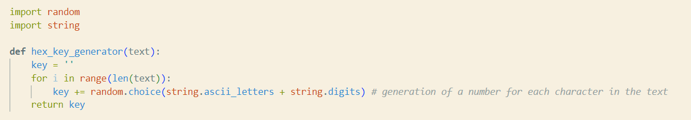
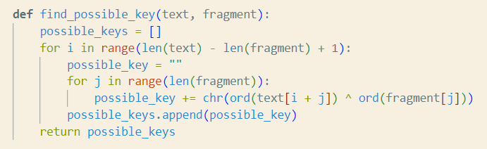
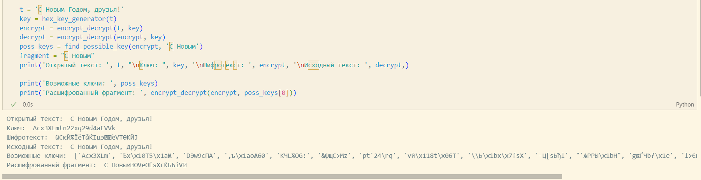

{ #fig:002 width=70% }
{ #fig:002 width=70% }lang: ru-RU title: Lab07 author: | Anna D. Zaytseva\inst{1,3} institute: | \inst{1}RUDN University, Moscow, Russian Federation date: NEC--2024, 19 October, Moscow
toc: false slide_level: 2 theme: metropolis header-includes:
Цель работы --- приобретение пракктических навыков по использованию инструмента Burp Suite.
Я создала функцию для генерации случайного ключа (Рис. [-@fig:001]):
{ #fig:001 width=70% }
Поскольку операция XOR отменяет сама себя, одной функции для шифрования и для дешифрования текста будет достаточно (Рис. [-@fig:002]):
{ #fig:002 width=70% }
Я создала функцию поиска возможных ключей для текстового фрагмента (Рис. [-@fig:003]):
{ #fig:003 width=70% }
Проверка работы всех функций. Шифрование и дешифрование происходит корректно, как и нахождение ключей, с помощью которых можно расшифровать корректно только кусок текста (Рис. [-@fig:004]):
{ #fig:004 width=70% }
Приобрела практический навык по применению метода однократного гаммирования.
Спасибо за внимание!